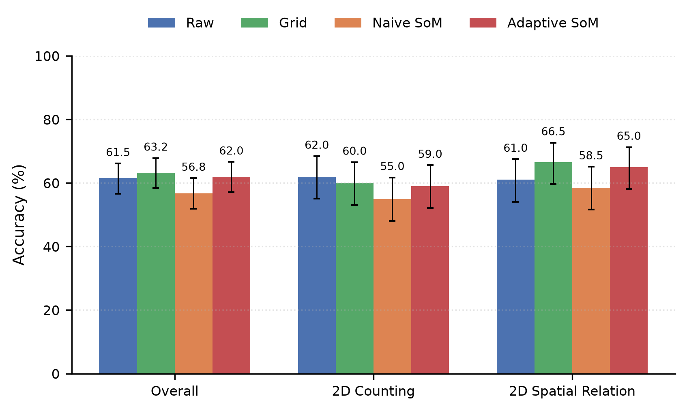

Density-Aware Adaptive Visual Prompting for Edge MLLMs
Compared raw images, a 3×3 coordinate grid, fixed Set-of-Mark, and a density-aware adaptive SoM renderer on 400 CV-Bench 2D questions with Qwen2-VL-2B-Instruct on an 8 GB laptop GPU.
Fixed SoM dropped overall accuracy from 61.5% to 56.8%; density-aware rendering recovered 62.0%, significantly above naive SoM (p=0.0038), while a simple grid remained strongest at 63.2%. The study reports the occlusion trade-off as a boundary result rather than a universal win.